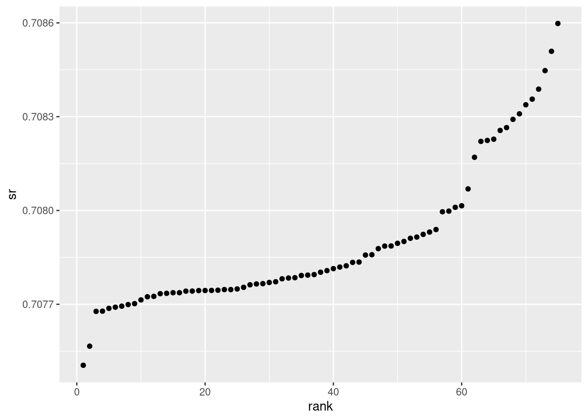

Assignment 2 · Excel, joins and visualisation
Ancient Egypt isotope analysis
Explored 75 archaeological enamel samples to compare strontium isotope ratios across groups. I imported Excel worksheets, joined measurements to context, and reported grouped summaries.
Rreadxldplyrggplot2


What this demonstrates
- Combined measurements and archaeological records using identifiers.
- Cleaned ambiguous category codes for comparisons.
- Explored differences without claiming causal conclusions.
Code preview
First 34 lines shown. Open the full script above for everything.
# Ancient Egypt strontium isotope data analysis
# Extracted from my DATA202 Assignment 2, Questions 1 & 2.
# Requires EgyptData.xlsx with the original sheet names in this folder.
# From inside this project folder, run: source("isotope_analysis.R")
library(dplyr)
library(ggplot2)
library(readxl)
filename <- "EgyptData.xlsx"
sheet_names <- excel_sheets(filename)
sheet_names
mineral_measures <- read_excel(
filename,
sheet = "mineral_measures"
)
materials <- read_excel(
filename,
sheet = "materials"
)
hyksos <- full_join(
materials,
mineral_measures,
by = c("material_id" = "sample_id")
)
df <- hyksos %>%
select(
relative_dating_upper_limit,
biological_sex,The images are from my submitted coursework HTML report; grades are reported by the student.